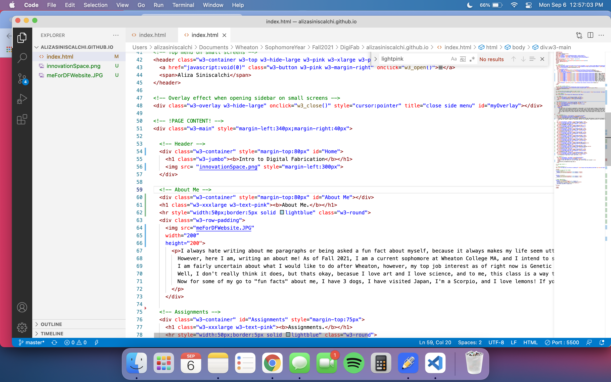
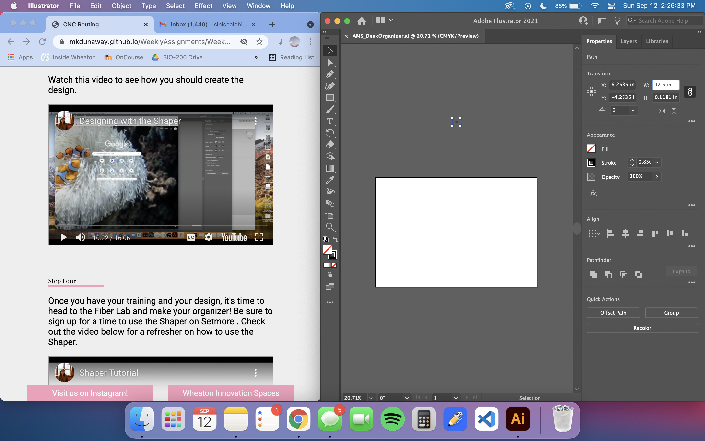

Intro to Digital Fabrication

About Me.
I always hate writing "about me" paragraphs or being asked a fun fact about myself, because it always makes my life seem utterly boring compared to everyone else. However, here I am, writing an about me! As of Fall 2021, I am a current sophomore at Wheaton College MA, and I intend to study Biology, with the possible addition of a Visual Arts and/or Psychology minor (total in the works decision). I am fairly uncertain about what I would like to do after Wheaton, however, my top job interest as of right now is Genetic Counseling. So how does digital fabrication fit into that you may ask? Well, I don't really think it does, but thats okay, becasue I love art and I love science, and to me, this class is a way to combine two of my main interests in a way I have never been able to do before. Now for some of my go to "fun facts" about me, I have 3 dogs, I have visited Japan, I'm a Scorpio, and I love lemons! If you want to know more about me, always feel free to utilize the contact section below!
Assignments.
Below, sorted by weeks, will be every project completed over the Fall 2021 Semster in the Intro to Digital Fabrication Class at Wheaton College. Each week will contain a summary of the project and how it was completed, along with pictures of the process and final project. Hope you enjoy!
Week 1: Make a Website.
The assingment for this week, week 1, was to create a website, using HTML and brackets. This website will serve as our documentation and submission place for all other assignments throughout the semester.

I began by searching W3 School template for a template I wanted to base my website off of. I picked the Interior Design Template, because I liked the sidebar menu, that is always accessible on desktop sites. After identifying which template I wanted to use, I copied the code and pasted it into Visual Studio Code, where I would begin to edit and customize the website code.
Before I even started my project, I was playing around with Visual Studio Code, and how to publish my website. I was not having luck getting the updated version to appear online. After talking to my Professor, we found it strange that I had two index pages open, and nothing was updating. We then realized that I had downloaded brackets incorrectly. After downloading brackets, I was able to update the page.


Next, I customized the different tabs in the sidebar to include a home button, an about me page, a button for each week of assingments, and a contact me button. However, the code I used to indent the weeks links in the sidebar below assignments, created a list using bullets which I did not like. As seen in the pictures above, I tried a different code where you specify no style for the list and it removes the bullets, which is exactly what I wanted.

After I had the sidebar formatted as I pleased, I directed the sidebar links to where they should lead. Meaning, when you press assignments in the sidebar, it should bring you to assignments on the website.

The next step I took, was more of a design choice, rather than adding information to the website. I changed the code which had all colors as red, to make the sidebar and text pink, and the small underlines in a light blue.


I then wrote out my about me paragrapgh and attempted to insert a picture of my self. The pictures above in chronological order, show each failed attempt at adding the picture:
1. My attempt at using an online compressor to obtain a URL for my picture.
2. Where I obtained the link on the online compressor.
3. My code for displaying the image on my website.
4. How the picture displayed on my website using the link from the compressor, which did not work.
5. I then attempted to insert the picture by coding each file directory until I reached the one it was in, which was the same folder as my website code, which failed (looked the same as image 4).
6. I realized I did not have to go through every directory, the image had to be in the folder with the code and then I just use the image name. However, this image did not work either.
7. I attempted to upload the same image from a different format, and using the steps from number 6. I also added in code to resize the image to the page because as seen in number 8, the image finally uploaded.
8. The image on the website!
I then added information for all of the weeks in the semester, which included which project I will be working on and the day it is due/will be updated on the website. I used this information as a placeholder until the assignments for each week are submitted.
While playing around on the live server to see if I liked my website, I realized one of my side bar links was incorrect. When you pressed "About Me," instead of bringing you to the About Me page, it brought you home, and the home button wasn't linked to go anywhere. The first picture shows the code containing the mistake, and the second picture shows what I changed the code to.
The main setup of my page was done, but the page looked a little boring. So, I decided to upload the innovation spaces graphic and center the website header to add a little style.

The last step before publishing my website, was to add in all of the pictures and information for how I created my website. So basically, this. The picture shows all of the images added to the same folder to the left side, and the basic layout I used to insert the text description and image with sizing to my website.


Finally, I commited all of my changes, and pushed my website! Week 1 has been published!
Week 2: Shaper.
For this weeks project, we created a desk organizer using a CNC Router, the Shaper.
To start off my porject, I first had to sign up to be traianed on the Shaper, as I have never used it before. Upon arriving for my appointment, Madison, my Professor and Trainer, walked me through the steps of creating a design in Adobe to be cut on the Shaper. We then went over the, extremely important, machine safety steps.
Before you can start working on the machine, you have to save your Adobe Illustrator file to the shaper thumb drive, which can be plugged directly into the shaper machine. In order to safely cut on your wood stock, you must secure it to the board by applying a strong double sided tape, and screwing the wood into the workspace, so that the top of your wood is flat (no screw heads sticking out).
Prior to cutting your design, you have to map your workspace. To do this, you move the shaper around your workspace so that you have scanned your whole stock, while also always having the special mapping tape in view, so that each square of the mapping tape turns blue on the shaper screen, meaning it is fully mapped.
We learned that it is always important to plug the vacuum into the machine, so that it collects the wood being cut from your board, as to avoid it flying off your project, or built up debris getting in the way of your work. It is also important to stop periodically in between the different cuts in your project to vacuum the board to ensure a clean and smooth surface.
As previously mentioned, machine safety is very important. In the above picture, I would like to highlight the use of earplugs and safety goggles when the spindle is set to on and you are actively cutting.
To cap off my training, I reviewed the posted, Shaper Review video, before going into the lab to work on my final project, to refresh my memory on how the machine works.
There are a few really cool features, which are big parts of how the Shaper works, that I would like to highlight.
The first cool feature is mapping your workspace, which I have explained the process of above. This is very useful because it stores your workspace on the Shaper, meaning you could alwasy duplicate your project with ease, or, if necessary, finish your project another day.
The screen on the Shaper is vital to properly using the machine. The screen alows you to see and, map your workspace, locate the various places to cut on your workspace, calibrate the end mill using "z-touch," change the depth at which the end mill cuts, change the type of cut, and many other things we didn't even begin to touch upon.
The two bits we used for our project were, the V-Bit and the 1/4" downcut flat end mill. The V-Bit was used for cutting out our text and the flat end mill was used for our pocket cutting and cutting out our project. There is also a long tool change accessory, which is used to loosen the spindle, so you can remove it and change the end mill. After removing the spindle, you have to use the wrench to loosen and remove the end mill, and then to tighten the new end mill.
When cutting on the Shaper machine, remember to always have both hands on the handles and not to make any sudden movements that may throw off the cutting process. The green button on the right handle is used for cutting and the yellow/orange button on the left handle is for retracting the spindle.

When cutting out the final perimeter, it is important to only cut between 0.25 and 0.4 inches at a time, it may take a few laps around the perimeter. It is also very important to remember to leave two tabs on the last go around. If you dont leave tabs, your final product is subject to come flying off the workspace. After the project is complete, and the Shaper has been turned off and moved form the workspcae, you use a hammer and chisel to break the tabs, which you can then sand off.
To make the design for my desk organizer, I had to first start by designing a sketch and render in Fusion 360. We start with a basic sketch of all the cutouts and dimensions.
To sketch my design, I utilized the rectangle and circle shape tools. I also used the filet tool on every rectangle corner, to round the edge, which was a stylistic choice. When creating my shapes, I typed in the dimensions as the boxes automatically appeared on the screen. These dimensions correlated to items I owned, and measured, which I planned to store in the organizer.

After I finished adding all of my cutout shapes and arranging them as I desired, I pressed finish sketch. I was then able to enter into render mode, which provides a better mock up of what the final project will look like. By pressing "e", and a specific component, I was able to extrude each component to its proper height. I was then able to add a material, wood, which shows a professional and finished render of my project design.
To export my project, I first had to hide Body 2 from the browse view tab to the left, to get the basic sketch render. I then tried to save my design and export it as a DXF, but I kept recieving an error that I could not export it as a DXF without the paid version of Fusion 360. After talking to another student in the class, I learned that I had to return to sketch mode, and right click the sketch in the left browse bar and select "Save As DXF".

The new version of Adboe Illustrator no longer excepts DXF files, so I used an online file converter, Convertio, to convert from a DXF file to an AI (Adobe Illustrator) file.
After downloading the correct file type, I imported my sketch into Illustrator. I then resized it to fit the workspace and my stock of wood, 12.5"x8.5".
To finalize my design, I had to add some text. I decided to add my initials to the bottom right corner, where I had left a blank space. Using the oval shape tool in Illustrator, I created a dragonfly shape to be cut in the same manner as my text. Dragnoflies have a very special meaning in my family, and I wanted to add a touch more personalization to my project.

The Shaper, has this special technology that allows you to color code your components in illustrator to represent different types of cuts. So when I plugged my design into the machine, it automatically knew which type of cut I was using for each component. So, I color coded my components, and then completed my design, and saved it to the shaper thumb drive.
Finally, we get to my finished product! I have included a picture of the empty desk organizer, the desk organizer filled with my belongings (except for the cup we will make next week), and the desk organizer with a placeholder cup.
My Fusion 360 DXF file My Adobe Illustrator file My SVG File{kind=link}
Week 3: FDM Printing.
For this weeks project, we created a cup, to fit into our desk organizer from last weeks project, using the FDM Printer, the Prusa MK3.
To begin my project, I first had to be trained on the Prusa MK3 FDM Printer. During my trianing, I was walked through the steps of designing and printing a small keychain. The first step was to design the keychain in Fusion360, as we learned how to use for our last project. Then we had to upload the design to Prusa Slicer, which I will explain later, and export that code to the SD card used for the printer.
To begin printing, make sure that the magnetic tray is in place, and add a layer of glue stick to the board if you are using a bigger project that may need help sticking. Before starting the project, the screen will display the temperature, which has to get to a certain point before begining. Using the dial, select unload filament to begin switching filament colors, and follow the on screen instructions. Similarly, twist the dial to load filament and follow the instructions until the nozzle dispenses your color. Then I was able to select my file and start printing my demo!
The next step was to start desigining my cup in Fusion360. The techniques are very similar to the techniques we learned and used while making the desk organizer, so I won't go into too much detail, but I will explain my process. I began by creating the sketch with the base of my cup, which matched the diameter of the circle in my desk organizer plus 0.25" to account for the quarter inch end mill used on the Shaper. Then I extruded the base to the desired height.


To create a more bulbus shape, rather than a straight cylinder, I had to create 2 new planes. On those planes I added circles of my desired diameter, to shape the cup.

The next step is to loft your project, which follows teh same concept as extruding it. But, lofting brings the shapes up to each plane, to create the bulbus cup shape. After lofting the cup, I realized that I was not happy with the size of the circle on the second plane, so I went in and edited that sketch. I also measured the pens I planed on putting in the cup, and I realized I wanted the cup to be taller, so I raised the height of the top plane.


I then had to decide how I wanted to design the exterior of my cup. I started scrolling through different shapes and sketches in Fusion360, until I stumbled upon the Torus tool. I was drawn to this design because it lays horizontally on the cup, rather than vertically, which is the more common design I have seen. Using the torus tool, I added a ring to my cup and adjusted the diameter and thicknes to fit along my cup. I repeated this process all the way up the cup.

To finish my cup design, I added a shell, which basically hollows out my shape to make it a useable cup. Then I filetd the brim of the cup to give it a softer appearance that matched the rings.
After exporting my Fusion360 design as an STL file, in my finder screen, I right clicked on the file and pressed open with PrusaSlicer. My computer then opened PrusaSlicer, with my project on a mock up of the magnetic printer map. In the right side bar, I changed the print settings to 0.20mm SPEED, which is an appropriate setting to achieve quality and some level of time efficiency. I also confirmed that the filament type selected was Prusament PLA, which matched the filament I was using, and the machine it was set to was the MK3. I set infill to 10%, which determines how hollow the project will print, mine didn't have to be very dense because it is just a pen holder.
Once all of my settings were to my liking, I exported the gcode and saved it to the SD card used for the FDM printers. Using the same steps to print as I did for the demo keychain I began printing my project.
' '
'
It is required that we stay in the room for the first 30 minutes of the print, as thats typically when something will go wrong if it is going to. I stayed for the first 3 hours becuase the fan on my printer was broken so the nozzle kept spitting out random chuncks of filament, some blue filament can still be seen in the cup. After 3 hours, I felt comfortable leaving, and per lab rules, I left a sticky note in front of the machine with my name and number in case of a problem. I returned to the the lab in 2.5 hours, 30 minutes before my project should have been done. However, when I got there, I realized the printer was still running, but there was no filament, meaning my project had continued printing for at least over an hour with nothing actually printing. So, as of 9/20/21, I only have half of my cup design printed, which still printed a useable cup, however, I will upload my finished cup once I can reprint my project.
After sending my gcode to my teacher to reprint my cup, I finally have a fully printed pen holder!
My Fusion 360 STL file My PrusaSlicer gcodeWeek 4: SLA Printing.
Information to come 9/27 :)
Week 5: Vinyl Cutting.
Information to come 10/5 :)
Week 6: Laser Cutting.
Information to come 10/12 :)
Week 7: Digital Embroidery.
Information to come 10/19 :)
Week 8: Mold Making and Casting.
Information to come 11/1:)
Week 9: Electronics.
Information to come 11/8 :)
Week 10: Final Project.
Information to come 11/15, 11/22, 12/6, 12/13 :)
Contact.
Want to learn more about me or my work? Please feel free to reach out via email! :)
siniscalchi_aliza@wheatoncollege.edu